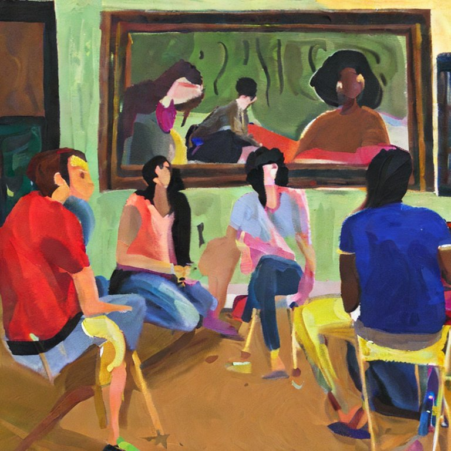

Bem-vindes à USP!
Parabéns ingressantes no curso de Letras da Universidade de São Paulo! A Nossa Língua preparou em sua primeira edição uma parte especial para dar boas vindas à todes que agora serão mais que uspianes, serão beletristas. Nós da equipe editorial da Nossa Língua, revista da Letras, entendemos as ansiedades e dúvidas que inquietam quem está entrando na “melhor universidade da América Latina”, pois já estivemos na mesmíssima situação. A pressão colocada em nossos ombros em troca do sonho de se formar não é nada fácil de se lidar. Porém, como veteranes podemos garantir: o ano de caloure é um dos melhores que se pode ter durante a graduação. As descobertas são muitas, seja para quem nunca havia entrado em uma faculdade, ou até mesmo para quem está em sua segunda ou terceira graduação. Pensando nisso, gostaríamos de bendizer esse início cheio de expectativas.
Para começar, achamos que todes já devem estar sabendo que este primeiro ano é chamado de “Ciclo Básico”. Por conta disso, as interações com o pessoal do curso são propícias e mais simples, depois há a separação entre as diferentes habilitações e disciplinas escolhidas individualmente, o que acaba por fragmentar os horários. Ressaltamos isso, pois um dos principais alicerces da permanência na universidade é a interação social e a formação de vínculos entre estudantes. Acreditamos que a socialização é tão importante quanto a grade horária cumprida de segunda à quinta (isso mesmo, até quinta nos primeiros dois semestres, a sexta é vaga!).
Outra oportunidade de interação com diferentes pessoas e ideias são os grupos e projetos estudantis, políticos, culturais e sociais presentes na USP. Estudar aqui facilita o contato com diferentes organizações capazes de impulsionar ações dentro e fora da universidade. A entidade mais próxima para se inteirar é o Centro Acadêmico, o nosso é o Oswald de Andrade (CAELL), lá é possível participar dos diálogos sobre as questões que permeiam o nosso curso e contribuir nas diversas atividades voltadas para melhorias da nossa comunidade. Inclusive, a nossa universidade é imensa! Isso levanta pontos bons e ruins, mas uma coisa é certa por consenso: é preciso escarafunchar essa gigante em seu mar de burocracias, oportunidades, eventos, etc. Então, se joga!
Mas, isso não é tudo! Pra quem também quer interagir se divertindo, existem os grupos de leitura, esportes através da Atlética, e os vários rolês, tipo as festinhas ou o beco da USP! Então, não se acanhe e vá em busca do que te interessa, demoro?
Por fim, nós da Nossa Língua gostaríamos de desejar boa sorte à todes ingressantes e que possamos, juntes, fazer desse um dos melhores anos para quem entrou cheio de esperança (ou dúvida) no curso de Letras na Universidade de São Paulo, conta com a gente.
“Café coado ou expresso?”
“Café coado ou expresso?” é a frase que mais se ouve por lá; está na boca de todes es brasileires (por bem ou por mal); um bom lugar para ler um livro. E, com o pensamento lá nela, sim, isso mesmo, estamos falando da USP. Mas será que ela se reduz a um simples café (coado ou expresso?), ao irremediável sono constante ou ao paraíso do conhecimento? Talvez, mais que isso, como pensaria um fã do velho da Havan, será que ela é somente palco das mais alucinógen… Opa!, alucinadas experiências? Deus me livre, mas quem me dera. Ou, como diria Sérgio Sampaio, “eu, por mim, queria isso e aquilo[…] é disso que eu preciso ou não é nada disso”. Enfim, acredito que ela seja tudo isso e mais um pouco. Então, digo: coado - que é mais barato.
A década de 30 não serviu somente para projetos autoritários de governo, mas também foi quando a uspinha ganhou sua certidão de nascimento. Aos 91 anos, essa jovem idosa divide o pódio de melhor faculdade do Brasil com a Unicamp. (Mas, claro, que me perdoem es unicampers, ela é a melhor). E tem campus até onde não dá mais: Bauru, Lorena, Ribeirão Preto, Pirassununga, Piracicaba e por aí vai. E, o mais conhecido, lar da Letras-USP, o Campus Cidade Universitário, no Butantã/SP. Lugar onde ciência, trampo e festas se juntam. Mais de 20% da produção brasileira de ciência é nossa (dados da Web of Science, 2019). Enquanto, pela RUF, somos as cadelinhas do mercado de trabalho. Além de ser o melhor e mais barato lugar para festas (fontes: MESMO, Eu).
Embora seja verdade que todos esses são possíveis aspectos que tentam decifrar o que seria a USP, eles não chegam aos pés do que sinceramente ela pode ser. Como disse, ela é “tudo isso e mais um pouco”. Então, esgotado a minha contribuição para descrever ela, deixo com vocês alguns comentários des própries ex-alunes e graduandes de diferentes anos, dessa trajetória que é estudar na USP-Letras.
“Festa na qib!”
“Onde tudo começa e não termina.”
“A melhor saída é nunca entrar.”
“A USP é minha casa. Ela abriu portas pra mim. Entrei com 15 anos de idade. E sai com 23. Eu comecei na lanchonete em que trabalhava e [depois de passar no vestibular] eu entrei no estágio. Foi maravilhoso.”
“Se você quer ver flores, 35 a grama.”
“É um esquema de pirâmide.”
“Sempre há espaço para mais um cigarrinho Tia Bia.”
“Conheci pessoas muito legais, expandiu meus horizontes. Não vim aqui pensando em seguir carreira na área. Mas pensando em passar por um processo de autoconhecimento.”
Attílio Favoretto Braghetto – Equipe Editorial
Com dúvidas?
Salve, caloure! Acho que você, assim como nós já estivemos, está cheio de dúvidas e curiosidades sobre como as coisas funcionam na USP. Para ajudar a resolver isso, fizemos um compilado de perguntas e respostas que você confere a seguir:
P: Como funcionam os transportes públicos na USP? (A depender do lugar)
R: A USP oferece e alune um bilhete único para a circulação dentro da universidade (chamado de Cartão BUSP), que pode ser requisitado por meio do Jupiterweb. Com o BUSP, e estudante consegue se locomover dentro da universidade com gratuidade. Para es alunes que chegam e voltam da USP de metrô, os circulares são a melhor opção. A Linha 8022 para voltar ao metrô e 8012, 8032 e o próprio 8022 para ir à USP são gratuitas com o BUSP. Porém, outras Linhas também fazem passagem nos pontos da USP. Peguemos o ponto em frente ao vão da Historia/Geografia como exemplo: No segundo semestre você terá as mesmas matérias, mas em seu segundo grau. Ou seja, se no primeiro você teve EL I, no segundo você terá EL II. Caso queira ir sentido Terminal Metrô Santana (ou vice-versa), pegue o 177H-10 ou 701U-10 Caso queira ir sentido Terminal Pq Dom Pedro (ou vice-versa), pegue o 702U-10 Caso queira ir sentido Terminal Princesa Isabel (ou vice-versa), pegue o 7181-10 Caso queira ir sentido Terminal Lapa (ou vice- versa), pegue o 7725-10
P: Como funciona a questão da permanência na universidade?
R: A USP oferece um auxílio permanência de R$800 (ou a moradia estudantil + $300) para es alunes de menor renda. Para solicitar, basta entrar no Jupiterweb na aba de “Programa de Bolsas” e ir em PAPFE/PRIP. Vale lembrar que nem sempre as inscrições estão abertas, então fique atento às datas limites colocados nos editais que a universidade solta.
P: Qual a grade curricular do curso?
R: Nesse primeiro ano, a grade curricular des alunes de Letras é comum. Ela é composta por 4 matérias no primeiro semestre e 4 matérias no segundo. No primeiro semestre você terá: Introdução aos Estudos Literários I (IEL); Introdução aos Estudos Clássicos I (IEC); Introdução aos Estudos de Língua Portuguesa I (IELP); Estudos Linguísticos I (EL) . Vale lembrar que você precisa de no mínimo 70% (o que no primeiro ano significa não faltar mais que 8 vezes em cada matéria) e nota média 5 para passar. Além disso, sua nota média irá contar para seu ranqueamento, que será feito ao fim do ano.
P: Como funciona o ranqueamento?
R: O ranqueamento é a forma que a universidade adotou para conseguir alocar es alunes em cada habilitação (língua) que está disponível. Para isso, é feito um sistema de ranqueamento através da média de cada aluno e a habilitação em questão. Por exemplo: leve em consideração que a habilitação de inglês tem apenas uma vaga. Joãozinho e Pedrinho tem inglês como primeira opção. Mas Pedrinho tem média 7 e Joãozinho média 6. Por conta disso, Pedrinho fica com a vaga na habilitação de inglês e Joãozinho é ranqueado automaticamente na sua segunda opção de habilitação. É possível escolher, por ordem de prioridade, outras habilitações para ser “ranqueade”. E alune é alocade automaticamente na primeira habilitação na qual sua média ultrapasse a nota de corte.
P: Quais são as possibilidades de carreira para quem se forma em Letras na USP?
R: As possibilidades de carreiras são variadas. Desde professore de Ensino Básico (para quem cursa licenciatura), professore universitário (para quem faz Bacharelado), tradutore de textos, artigos e livros, pesquisadore de questões sobre a língua e etc.
P: Quais são as oportunidades de intercâmbio para estudantes de Letras na USP?
R: As opções de intercâmbio são bem amplas. Como a USP é a maior universidade da América Latina, existem parcerias com diversas universidades no exterior. Vale ficar de olho nos editais e suas exigências para cada uma (normalmente são variadas). Além disso, ao escolher a sua habilitação, essa é uma questão a se refletir, pois é um ponto de conexão com a língua e cultura a se estudar.
P: É muito difícil fazer amigues na USP?
R: Definitivamente não! A universidade é, além de tudo, um ponto de interação social. A calourada, por exemplo, é um momento destinado apenas para es caloures conhecerem a universidade e a comunidade que está ingressando. Mas não se preocupe se não conseguir participar da calourada, não é nem um pouco difícil fazer amizades na USP e as pessoas são bem receptivas.
P: Tudo se resume a estudar?
R: Como dito anteriormente, não! Existem diversas coisas a se fazer na USP além de estudar. Os esportes praticados no Centro de Práticas Esportivas da USP (CEEPEUSP), os saraus que são organizados pelo CAELL (Centro Acadêmico da Letras), as cervejadas e as festas. Todas essas atividades têm o intuito de integrar es alunes e tirar a pressão do dia a dia que é colocada sobre o colo des estudantes.
P: O que é um CA?
R: Um CA é uma entidade representativa des estudantes do curso, assim como os grêmios nas escolas. Todo ano ocorrem eleições, nas quais es estudantes decidem qual será a próxima gestão que estará à frente do CA. O CA, portanto, não é a mesma coisa que a gestão. A gestão que está à frente do Centro Acadêmico hoje em dia é a gestão Balalaica. O CAELL é o CA da Letras, e seu nome é Centro Acadêmico de Estudos Linguísticos e Literários – Oswald de Andrade.
P: Quem estuda na USP se mobiliza politicamente?
R: Sim e não. Existem questões difíceis que perpassam o nosso curso, como a falta de professores, o estado do nosso prédio e tantas outras que precisam ser discutidas e sanadas pela Reitoria, mas também pelo corpo estudantil, afinal, somos nós que usufruímos da universidade. Por esse motivo, existem muitas pessoas que se preocupam e participam ativamente por melhorias. Independente dos diversos posicionamentos políticos que coexistem em nossa comunidade, problemas práticos são frequentes em nosso cotidiano e precisam ser resolvidos se quisermos ter o que de melhor a USP pode oferecer – reforçando sempre o seu caráter público.
João Pedro Andreassy Castro – Equipe Editorial
Produção independente
A Nossa Língua quer dar voz às produções independentes da nossa comunidade. Se você já é artista ou não tem nada publicado, esse espaço é teu! Queremos promover cultura e acolhimento, sua participação é vital para a nossa revista. Mande quantos textos quiser, use & abuse.
Qual a relação da arte com a fumaça?
Os dois existem onde há fogo,
um arde dentro do peito
o outro arde o olho.
Ambos querem oxigênio,
liberdade criativa pra respirar e criar no próprio
tempo,
amigo comum do vício dos tolos.
Um procura poesia em tabaco
o outro o vício do consumo preenchível.
Inimigo volúvel do vento,
ambos se dissipam
e caem no esquecimento.
Ana Gabriela Pacheco (estudante de Letras e escritora, autora de livros como “Vote em Hugo Pirinha” e “Pote de Lágrimas”)
Fala memo!
Eai, td certo? A Nossa Língua quer trocar ideia, mas pra esse papo acontecer cê precisa chegar junto também. Se a revista será feita das inúmeras vozes (dissonantes) da nossa querida Letras, sua presença é vital: seja enviando uma intervenção, comentando as edições/matérias ou dando aquela puxada de orelha. A gente publica na próxima edição!
Então, pensa com carinho! Manda no nosso insta aquela rima guardada na gaveta, aquele texto top que cê quer ver o pessoal discutindo, uma análise de um filme mucho loco, um poema esquecido nas notas do cel… Ou já logo lançando a braba sobre algum assunto publicado aqui que cê discordou. Bota pra circular as ideias! Não é tão difícil assim, vai.
Vem que a gente tá te esperando, beletrista!
Para os textos serem publicados em nossa revista, seguimos alguns norteadores éticos para que o respeito e a convivência sejam mantidos. Fora isso, todas as penas valem a pena, se acanha não!
Proibido – Violência ou ataque com base na raça, etnia, nacionalidade, sexo, gênero, identidade de gênero, orientação sexual, religião, deficiências ou doenças; Ataques individuais com constrangimento e degradação; Apologia a grupos de extrema direita política.
Obrigatório – Seguir os prazos sugeridos; e respeitar os pareceres da Equipe Editorial.